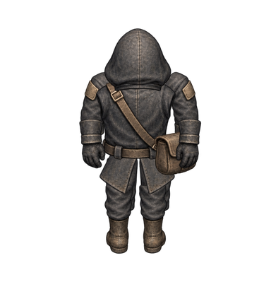

Detached generated parts, not the left flat guide. South is unchanged. Source continuity and art acceptance remain unproven.
Current selection: attempt 01, uniform 0.4, the PROPOSED baggy-leg reference preferred by the owner. Attempt 02 slimming is blocked history in attempts/.

The pink + marks the retained (192,336) root, not an inferred sole or heel/toe contact. Browser CSS is source inspection, not runtime evidence.
Observed concerns: wider satchel and boots, different coat-tail silhouette and material highlights, insufficiently proven elevated view. Do not admit or expand animation from this sample.
Bindings and hashes · Limits and reproduction · Actual-alpha sheet inspection